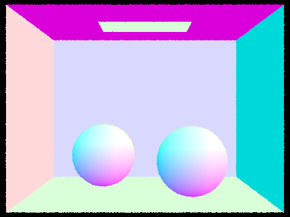

Overview
In this project, we implemented core routines of a physically-based renderer to simulate physical light behavior and ultimately produce images with realistic illumination. This task was broken into five parts: Ray Generation and Scene Intersection, Bounding Volume Hierarchy, Direct Illumination, Global Illumination, and Adaptive Sampling.
We encountered various problems from segfaults to crazy renderings, but this project was overall incredibly instructive and time well spent. We spent hours debugging, running line-by-line tests with print statements, asking clarifying questions on Ed, reviewing lecture notes, and even returning to C++ tutorials.
This project gave us the opportunity to model real-world processes of light flow and path tracing. Implementing the BVH demonstrated how we can massively improve computational efficiency by using this optimization method. Global illumination showed immediate visual implications of the Monte Carlo math concept we covered in class.
Part 1: Ray Generation and Scene Intersection (20 Points)
Walk through the ray generation and primitive intersection parts of the rendering pipeline.
The first step in the rendering pipeline is ray generation. We are given the (x, y) coordinate in which to send the ray, but the ray is generated in world space, whereas the camera utilizes a different system known as camera space. So we must first transform the (x, y) coordinate to camera space, then generate the vector, then transform it back to world space.
In the camera space coordinate system, the camera is at the origin and faces the negative z axis. Its field of view is defined using the angles hFov and vFov (in radians), and the viewing plane is located at one unit of depth in the view direction. As a result, the viewing plane's bottom left corner and top right corner are located at (-tan(hFov/2), -tan(vFov/2), -1) and (tan(hFov/2), tan(vFov/2), -1) respectively. In contrast, normalized image space is defined from (0, 0) to (1, 1).
So, for each pixel, we take its 2D un-normalized image space coordinates and normalize that to the range [0, 1]. Then we transform that to camera space and add a negative z coordinate pointing the vector to the viewing plane. Finally, we transform this ray vector from camera space to world space using transformation matrix c2w to get the final ray direction vector.
We also implemented primitive intersection. After casting rays for each pixel, we must determine whether these rays actually strike any objects. Intersection tests are also used to check whether an object is directly illuminated by a light source and if an object is obscured from view by another object. For this project, we implemented intersection tests for both triangles and spheres.
Explain the triangle intersection algorithm you implemented in your own words.
To implement ray-triangle intersection, we utilized the Möller–Trumbore algorithm. In the most straightforward approach, we first calculate whether the ray intersects the plane that the triangle is located in. If yes, we determine whether the ray-plane hit point is within the triangle (we can do this using the Barycentric coordinate test from assignment one). Möller–Trumbore merges these two steps into a single matrix multiplication equation by cleverly applying Cramer's rule.
We determine the triangle-ray intersection using the Möller-Trumbore equation, but in order for it to be a legitimate intersection, the time t of intersection must fall between min_t and max_t for the Ray object. max_t in particular tracks whether there is a closer intersection. If t does fall between min_t and max_t, we change max_t to t, which means this collision takes priority over further away objects, thus solving the problem of which pixel should be visible.
Show images with normal shading for a few small .dae files.

|

|
Part 2: Bounding Volume Hierarchy (20 Points)
Walk through your BVH construction algorithm. Explain the heuristic you chose for picking the splitting point.
The BVH, or bounding volume hierarchy, tremendously improves the efficiency of our ray tracing algorithm. As it currently stands, any scene with even a moderately large number of objects will take a very long time to render because it requires a huge number of scans to determine each pixel value. The BVH partitions primitives spatially in a tree structure, allowing us to first determine whether a ray intersects a bounding box before determining whether it intersects the items inside. This quickly eliminates items where the ray does not even intersect box that surrounds it.
To construct the BVH, we construct a node containing every primitive in the scene. We first iterate over primitives to compute their overall bounding box and the mean of their centroids. If the number of primitives is no more than max_leaf_size, we construct a leaf node and return. Otherwise, we continue to construct a parent node.
Next, we choose an axis along which to partition the primitives. We choose the axis in which the overall bounding box is longest. Then, we choose our split value on the axis to be the mean of all the primitive’s centroids.
We use std::partition() to partition the primitives iterators in place. This function returns an iterator middle so that all the primitives from start to middle have centroid positions which are less than the mean along the chosen axis, and all the primitives from middle to end have positions that are greater than or equal to the mean.
It is possible (though uncommon) that all the primitives end up on one side of the partition, and middle is equivalent to either start or end. This can happen if all the primitives are perfectly aligned in the chosen axis. In this edge case, we simply set middle to the middle of the list, arbitrarily splitting the primitives into two sets.
Finally, we recurse: We construct one node for primitives start to middle, and another for middle to end. These two nodes become the left and right children of the parent node.
Show images with normal shading for a few large .dae files that you can only render with BVH acceleration.
|
|
|
|
|
|
Compare rendering times on a few scenes with moderately complex geometries with and without BVH acceleration. Present your results in a one-paragraph analysis.
cow.dae rendered in 8.7561 seconds without BVH acceleration and in 0.0383 seconds with BVH acceleration
CBcoil.dae rendered in 11.6604 seconds without BVH acceleration and in 0.0337 seconds with BVH acceleration
These tests were run using 8 threads on an M2 processor
Our BVH algorithm greatly reduces runtimes of complex scenes, demonstrating the effectiveness of the data structure. By excluding nodes with bounding boxes where rays are guaranteed not to collide, there are fewer primitives that need to be individually checked for intersection. With a good heuristic, runtime reduces from linear to logarithmic. In our tests, cow.dae drops in render time by 99.48% and CBcoil.dae drops in render time by 99.71%. Note that the geometric complexity of both of these files is just moderate; it would be entirely impractical to render large models like wall-e.dae without BVH acceleration.
Part 3: Direct Illumination (20 Points)
Walk through both implementations of the direct lighting function.
Direct Lighting with Uniform Hemisphere Sampling
The first method we used to implement direct lighting estimation is by sampling uniformly in a hemisphere around each intersection point. Our goal is to compute the outgoing radiance after light hits a surface.
To implement uniform hemisphere sampling, we perform a Monte Carlo Estimate over num_samples iterations. For each iteration, we randomly sample an incoming direction vector from the unit hemisphere using hemisphereSampler->get_sample. We convert this vector into world space, and create a ray originating at the hit point and pointing in the sampled direction. Then, we check what object the ray intersects with, and evaluate its emissive BSDF (which will be zero for non-light sources). We can multiply the emission, the hit surface BSDF, and the cosine-theta term to determine the contribution of this sample to our estimate. We divide the sample by its pdf (always 1/2π since we’re sampling uniformly from the hemisphere). Finally, we average these samples to obtain the Monte Carlo Estimate.
Direct Lighting by Importance Sampling Lights
Our other implementation of direct lighting is importance sampling. In this approach, instead of sampling across the whole hemisphere, we only sample incoming ray directions that we know point toward light sources. This reduces the noise in our renders and also allows us to render images with point lights.
In our implementation, we sample each light source in a scene. We first determine whether a particular light is a delta light source, in which case we only need to sample once since all samples will return the same result. Otherwise, we iterate over ns_area_light samples for each light source.
In the inner loop, we generate a sample of light using SceneLight::sample_L(). We must check the sample's z value because if the z value is negative, it means the sample is behind the surface and won’t be visible, so we can skip it. Otherwise, we create a shadow ray with origin at the hit point plus a slight offset EPS_F, and direction toward the light. The next step is the shadow check: we check for intersections along the ray between the hit object and the light source. If there are no intersections, we know this ray has reached the source without disruption, and we can then calculate irradiance using the same formula used in uniform hemisphere sampling. Once we have the accumulated irradiance, we obtain our final return value by dividing by the number of light samples taken.
Show some images rendered with both implementations of the direct lighting function.
|
16 samples per pixel, 8 light rays |
16 samples per pixel, 8 light rays |
|
16 samples per pixel, 8 light rays |
16 samples per pixel, 8 light rays |
Focus on one particular scene with at least one area light and compare the noise levels in soft shadows when rendering with 1, 4, 16, and 64 light rays (the -l flag) and with 1 sample per pixel (the -s flag) using light sampling, not uniform hemisphere sampling.
|
|
|
|
|
|
The above tests used 1 sample per pixel with 1, 4, 16, and 64 light rays. Increasing the amount of light rays clearly reduces noise. Examining the bunny's shadows, when sampling with more light rays, we get a much more accurate estimation of the soft shadows below the bunny. This is because when calculating irradiance, it takes the average of many light samples, combining those blocked by the bunny's body and those not.
Compare the results between uniform hemisphere sampling and lighting sampling in a one-paragraph analysis.
Importance sampling produces far superior renderings compared to uniform hemisphere sampling. Both were rendered with the same light and sample count configuration, but importance sampling results in far less noise. This is because in uniform hemisphere sampling, most sampled directions don’t hit a light source, and don’t contribute useful information to the monte carlo estimate. On the other hand, most directions sampled in importance sampling actually contribute to illumination (except for the ones which turn out to be shadowed). This means that uniform hemisphere sampling requires a far greater sample count per pixel to achieve the same signal-to-noise ratio as importance sampling.
Part 4: Global Illumination (20 Points)
Walk through your implementation of the indirect lighting function.
Direct lighting accounts for one light bounce before termination, but this is not realistic to actual lighting. In the real world, light bounces off multiple surfaces multiple times. This is called indirect lighting: the lighting beyond the initial, “direct” light that allows much more illumination in areas not directly hit by light.
We first implement zero bounce lighting, which is light that travels from a light source directly toward the camera. We acquire this value simply using get_emission().
We must then account for one bounce lighting. This is direct illumination, which we implemented in part 3.
The bulk of this section is implementing the recursive equation at_least_one_bounce_radiance(). In each recursive step, we must determine whether to terminate the recursion or continue with additional bounces. Setting a small constant number of bounces per sample would result in a strongly biased estimator that ignores the impact of light rays that bounce more times than that limit. On the other hand, setting a large constant would reduce bias, but it would waste time always computing a big number of bounces that don’t have a big effect on each pixel. An infinite limit would have no bias, but the renderer would never terminate.
Thus, we employ a probabilistic termination criterion called Russian Roulette which can be unbiased without infinite recursion. Our implementation of Russian Roulette randomly terminates recursion with a coin flip probability that we set to 0.35. We use this in combination with a ray depth tracker that decrements until it reaches zero, at which point we guarantee termination. This max ray depth cutoff means that our renderer is technically biased, but if the max ray depth is set high enough, the bias is negligible. Additionally, our implementation follows the specification in this Ed post, specifying that we must have a minimum of two bounces per sample. We implement this by guaranteeing continuation after the first intersection.
Upon each recursive intersection, we randomly sample a ray from the intersection point and propagate it (with decrementing depth value) until it hits another object. We collect the direct-lighting radiance at this intersection point. To derive irradiance, we scale by the BSDF and cosine terms and divide by the pdf and the continuation probability (in our case, 0.65 after the first two bounces). This covers the irradiance from direct and indirect lighting. Global illumination is the result of this function, plus zero-bounce irradiance.
Show some images rendered with global (direct and indirect) illumination. Use 1024 samples per pixel.
|
|
|
We used four light rays and a max ray depth of 5.
Pick one scene and compare rendered views first with only direct illumination, then only indirect illumination. Use 1024 samples per pixel. (You will have to edit PathTracer::at_least_one_bounce_radiance(...) in your code to generate these views.)
|
|
|
We used four light rays and a max ray depth of 5. On the left is a render of only the direct illumination from the light source. A render of just indirect illumination is shown on the right. Notice how areas like the ceiling and the bottoms of the spheres are only illuminated by indirect light bounces.
For CBbunny.dae, compare rendered views with max_ray_depth set to 0, 1, 2, 3, and 100 (the -m flag). Use 1024 samples per pixel.
|
|
|
|
|
|
|
|
We used four light rays. With max ray depth zero, so we only see light that is emitted from the source because there is no light reflection at all. We observe that as we increase max depth, light bounces more, and the overall brightness of the scene increases. This is especially prominent in the bunny's shadows. However, notice that using max depths of 3 vs 100 yield quite similar renderings. These diminishing returns are due to Russian Roulette, as rays will very rarely bounce much more than three times anyways. In our implementation, the probability of getting 100 bounces is 0.6599.
Pick one scene and compare rendered views with various sample-per-pixel rates, including at least 1, 2, 4, 8, 16, 64, and 1024. Use 4 light rays.
|
|
|
|
|
|
|
|
|

|
We used a max ray depth of 5. Increasing the amount of samples per pixel greatly reduces overall noise in the render. The only downside is that it comes with the cost of greatly increased rendering times.
Part 5: Adaptive Sampling (20 Points)
Explain adaptive sampling. Walk through your implementation of the adaptive sampling.
Increasing the number of samples per pixel helps reduce noise. Some pixels might only need a small number of samples to render a scene with high accuracy, while other pixels might need thousands of samples to achieve the same fidelity. In other words, for more difficult regions of the image, the pixels converge more slowly, while for easier ones, they converge quickly. Adaptive sampling intelligently decides whether to stop collecting new samples for each pixel based on whether or not the pixel has likely converged.
We implemented adaptive sampling by altering the raytrace_pixel(x, y) method from 1.2. To do so, we add a check every samplesPerBatch samples to see if the pixel has converged. If the pixel’s measure of convergence I surpasses a threshold as specified by equation I <= maxTolerance * μ, then we can assume with 95% confidence that the pixel has converged. When this occurs, we can terminate the sample loop and halt tracing additional rays. I is calculated based on mean σ and standard deviation μ, both of which are calculated based on the running total illuminance and illuminance squared.
Pick two scenes and render them with at least 2048 samples per pixel. Show a good sampling rate image with clearly visible differences in sampling rate over various regions and pixels. Include both your sample rate image, which shows your how your adaptive sampling changes depending on which part of the image you are rendering, and your noise-free rendered result. Use 1 sample per light and at least 5 for max ray depth.
We wrapped our code around the PART variable to allow us to test rendering times with and without BVH acceleration. Setting PART=1 returns the render without BVH acceleration while
|
|
|
|
|
|
Configurations: 2048 samples per pixel, 1 sample per light, max ray depth = 5, samplesPerBatch = 64, and maxTolerance = 0.05.
Red indicates high sampling rates while green indicates medium sampling rates. Because both images’ bottom halves face away from the light source, its pixels converge more slowly, and thus, many samples are required. On the other hand, the top half of the images face the light, causing its pixels to converge quickly. Less samples are thus required. Hence, rendering with adaptive sampling intelligently produces noise-free images while requiring shorter runtimes compared to rendering without it.